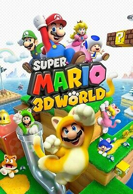

Super Mario 3D World
Super Mario 3D World
Details
|  | |
| Playtime | Not Played |
| Last Activity | Never |
| Added | 4/29/2025 7:06:28 |
| Modified | 4/30/2025 2:51:31 |
| Completion Status | Not Played |
| Library | Playnite |
| Source | |
| Platform | Nintendo Wii U |
| Release Date | 11/21/2013 |
| Community Score | 85 |
| Critic Score | 91 |
| User Score | |
| Genre | Platform |
| Developer | Nintendo EAD Tokyo |
| Publisher | Nintendo |
| Feature | Multiplayer Single Player |
| Links | Wikipedia Official website |
| Tag | [People] artist: Daisuke Watanabe [People] artist: Rikuto Yoshida [People] composer: Koji Kondo [People] composer: Mahito Yokota [People] composer: Toru Minegishi [People] composer: Yasuaki Iwata [People] designer: Eisaku Sato [People] designer: Futoshi Shirai [People] designer: Yuichi Iwasa [People] director: Kenta Motokura [People] director: Koichi Hayashida [People] producer: Yoshiaki Koizumi [People] programmer: Hideyuki Sugawara [People] programmer: Norihiro Aoyagi |
Description
Super Mario 3D World is a 2013 platform game developed and published by Nintendo for the Wii U. It is the sixth original 3D platform game in the Super Mario series and the sequel to Super Mario 3D Land, a 2011 title for the Nintendo 3DS. The game was re-released for the Nintendo Switch as Super Mario 3D World + Bowser's Fury on February 12, 2021.
Players control Mario and his friends attempting to rescue fairy-like creatures called Sprixies from Bowser, who invades the realm known as the Sprixie Kingdom. The gameplay is similar to previous Mario games, with players progressing through levels to reach Bowser. It features a character selector as well as introducing a power-up called the Super Bell, which turns the player into a cat, enabling them to climb walls and use a scratch attack.
Super Mario 3D World was acclaimed for its level design, presentation, replay value, and soundtrack, though some reviewers criticized its unreliable camera in the multiplayer mode. The game was a financial success, with the Wii U version selling 5.89 million units and the Nintendo Switch version selling 13.47 million units worldwide as of March 2024, becoming the second best-selling game for Wii U and one of the best-selling games for Nintendo Switch. Between both versions, a total of 19.36 million units have been sold worldwide.
Gameplay
The game levels play similarly to those of Super Mario 3D Land, which combine the free-roaming gameplay of the Super Mario franchise's 3D games with the mechanics of its 2D side-scrollers, including a timer and a level-ending flagpole. Up to four concurrent players may control characters, who are Mario, Luigi, Princess Peach, Toad, and the unlockable Rosalina. Similar to their appearances in Super Mario Bros. 2, each of the characters possesses unique abilities and controls differently: Mario has balanced running speed and jump height; Luigi jumps higher and falls slower, but has slightly lower traction; Peach can jump and briefly float through the air, but runs slowly; Toad runs the fastest, but cannot jump as high and falls faster; Rosalina can use the spin attack move as seen in the Super Mario Galaxy games, but has the slowest running speed. The player can select any of the five characters to use before beginning a level, and up to four players may explore the same level simultaneously, sharing from a pool of lives. Players are also able to pick up, carry, and throw each other.
Levels are accessed through a world map, in which players can find hidden areas to earn more items or coins. Each level contains three collectable Green Stars, which are required to access certain levels, and each main level contains a hidden Stamp which was used in handwritten posts to the now defunct Miiverse online community. Players can also view messages left by other players, both on the world map and after clearing a level, and can download 'Mii Ghosts', which are live records of other players completing levels. Ghosts can be raced against, and may hold gift prizes such as coins or extra lives. Additional Green Stars can be earned in Captain Toad, Mystery House, and Challenge levels.
Along with items returning from previous games, such as the Fire Flower, Super Leaf, Mega Mushroom, Propeller Box, and Boomerang Flower, several items are introduced. The Super Bell gives players a Cat Suit, allowing them to run faster, perform unique attacks and climb up walls to reach new areas. A variation of the Super Bell, the Lucky Bell, allows the player to temporarily transform their character into a lucky cat statue that awards coins under certain conditions. Double Cherries make a clone of the player, allowing for more effective attacks and a higher chance of survival; the more Double Cherries a player uses, the more clones appear. Players can wear Cannon Boxes which fire shots at enemies, Light Blocks which can defeat ghosts, and Goomba masks which let them blend in with enemy Goombas. Players are able to pick up various objects, such as bombs, baseballs, and Piranha Plants (which can be used to defeat enemies or solve puzzles), and can ride in a Skating Shoe or on an aquatic dinosaur named Plessie.
The Wii U GamePad allows players to rub the touchscreen, blow into the microphone to reveal hidden blocks or items, hinder enemies, activate mechanisms, and use Off-TV Play. The game is compatible with the Wii Remote, Nunchuk, Classic Controller, and Wii U Pro Controller. An unlockable Luigi-themed version of Mario Bros., Luigi Bros., is accessed by clearing the game or by having save data from New Super Luigi U.
Plot
Mario, Luigi, Peach, and Toad are watching a fireworks show near Princess Peach's Castle until they find a tilted glass pipe. After Mario and Luigi fix it, a green fairy-like Sprixie princess appears and tells them that Bowser has kidnapped and trapped six other Sprixie princesses in jars. He arrives and captures her before escaping through the pipe, with the heroes subsequently entering it and pursuing him. They find themselves in a realm known as "The Sprixie Kingdom" and set off to find the Sprixies. Each of the Sprixies are rescued in the different worlds. After the heroes save the final one, Bowser recaptures all seven and heads to his amusement park fortress. Thereafter, Bowser uses the Super Bell to transform into a cat form called Meowser. The group proceeds to climb the tallest tower and defeat Meowser. The heroes say goodbye to the Sprixies and travel home through the pipe back to the Mushroom Kingdom.
Development
Development on Super Mario 3D World began shortly after the release of Super Mario 3D Land with Nintendo EAD Tokyo heading the project; 1-Up Studio provided developmental assistance.[better source needed] A staff of 100 personnel, including producer Yoshiaki Koizumi, wrote ideas for game mechanics on sticky notes, which were collected upon the studio walls. Ideas approved by the team would be implemented in-game for testing. Co-director Kenta Motokura stated, "We discussed and discarded a huge number of ideas during development – sometimes you just can't tell if an idea is good or bad by looking at it on the drawing board; when this happens, we try it out in-game. If we don't find the idea fun, it won't make it into the final product. There was a lot of back and forth on the course designs due to this." Co-director Kōichi Hayashida stated that Super Mario 3D World was intended to be a Wii U game for the fanbase of New Super Mario Bros., as well as a de facto continuation of Super Mario 3D Land. Implementing the game's multiplayer feature was proven to be complicated, as the team's goal was to perfect the camera for all four players simultaneously without them "feel[ing..] left out". Motokura expressed that the game was designed to be both "highly intuitive and readily accessible". "We designed this game so that the players could really sink into it and clear all the courses without having to read lots of text or deal with difficult controls, whether playing by themselves or with others," Motokura added. Koizumi said that the team "went all out inserting elements [that allow] players to further enjoy the sprawling environments."
Ideas for the game's feline costumery came early in development, to implement an attack mechanic, introduce the ability to climb walls, and help novice players to clear obstacles. "When we started out, we were thinking about different kinds of actions that Mario could do," said Motokura in an interview with IGN, "thinking about those different actions [...] it turned out that a cat was a perfect animal that everybody knows."
Regarding power-ups, Motokura said the process of including power-ups being included involve balancing a novice player's experience between difficulty and "what was fun about the game". He added that the team wanted to introduce "new" ways to use classic power-ups, such as using the Fire Flower on clear pipes.
Inspiration for the Double Cherry, which clones a player character, came late in development when a level designer erroneously inserted an extra copy of Mario's character model into a level. The team was relieved to see that the game did not crash with two identical characters present, and were amused that both could be controlled simultaneously. Developers "scrambled" to include this feature in the final game. Motokura stated that it is also designed for single players to "[...help] replicate some situations" with multiplayer elements.
The decision to include a free-roaming world map was "a very important element", and gave the team more "freedom" to locate higher-difficulty levels. "In just one world, the world map, you can have all kinds of different experiences. [...we] want to emphasize some of the other elements that are free-form within the world maps," Motokura said.
According to Hayashida, Peach was originally not intended to be a playable character until producer Yoshiaki Koizumi suggested for her inclusion. Speaking with Polygon, Koizumi reasoned that it's to emphasize female representation. "I feel like Mario games, as you know, have done lots of representation of male characters over the years", he said, "perhaps much more so than female — so it's actually really nice to be able to have a female playable character in the game." Miyamoto also commented on his own reasoning by saying "I'll add that cat women have a sexy side to them and I wanted to see what a feline Peach would look like (laughs)". Koizumi added, "I think she adds a lot to the sense of competition when you get in multiplayer. You can have different people choosing different characters based on their personality or whoever they like." Similarly, Rosalina was later added as a playable character. Motokura said, "I was thinking about what would be pleasing after the ending and wanted to bring in another female character in addition to Princess Peach. Rosalina has a following among the Super Mario Galaxy fanbase, and she appeared in Mario Kart recently, so I think she's well known." Yoshi was also planned at one point, but was dropped due to much of his moves being too similar to other functions of characters and items, such as Peach's floating, the Piranha Plant's chomping, and Plessie's riding abilities (who can allow three additional characters).
According to Koizumi, the game was also planned to have a stereoscopic 3D feature similar to Super Mario 3D Land, but was dropped due to multiplayer concerns over the use of 3D glasses. Shigeru Miyamoto, the creator of Mario, said that "the team had a strong desire from the very start to call it 3D World".
Music
The game's soundtrack was composed by Mahito Yokota (who is also the sound director), Toru Minegishi, Koji Kondo, and Yasuaki Iwata, and performed by the Mario 3D World Big Band, which they formed after being inspired by jazz music. "There are naturally a lot of tracks performed live," stated Yokota. "We're arranging the music with a big-band feel, taking advantage of a full horn section with trumpets and saxophones." In addition to the game's new compositions, it features new arrangements from games such as Super Mario Bros. 2 as well.
In developing the music, Yokota mentioned that he worked on "fun, energetic" tracks to match the game's cat theme, with a few even using electric guitar and trombone tunes imitating a cat's "meowing" sounds. After working on Super Mario Galaxy and its successor, one of Yokota's goals for the soundtrack is to shift musical direction from the games since the majority of 3D World takes place on the ground. "The game chiefly takes place on terra firma, so there isn't the majestic or floaty feel of the Mario Galaxy series; instead, the music has a more rhythmic atmosphere, something you'll want to dance to," he said. When asking about live orchestrated soundtracks for the game, previously done in the Super Mario Galaxy games, a Destructoid reporter was asked to "[w]ait for more information about that soon."
A soundtrack was released for Club Nintendo members in Japan, Australia, and Europe, featuring 77 tracks across two CDs.
Release
In a January 2013 Nintendo Direct, Nintendo teased that a new 3D Mario game was being produced by the development team behind Super Mario Galaxy. The game was announced during the E3 2013 Nintendo Direct on June 11, 2013, along with a tentative release date of November 2013. It was released in Japan on November 21, 2013, North America on November 22, 2013, Europe on November 29, 2013, and in Australia on November 30, 2013.
Super Mario 3D World + Bowser's Fury
An enhanced port for the Nintendo Switch, Super Mario 3D World + Bowser's Fury, was announced on September 3, 2020, as part of the Super Mario Bros. 35th Anniversary-themed Nintendo Direct and released worldwide on February 12, 2021, alongside Cat Mario and Cat Peach Amiibo figures. The port adds an online multiplayer option, Amiibo functionality to spawn power-ups, a Snapshot feature for taking in-game screenshots, and four-player co-op to the Captain Toad levels. Other differences include the base speed of characters being increased and the stamps unlocked throughout the game, originally intended for the now-discontinued Miiverse service, can now be used to decorate the environment in Snapshot mode.
The new Bowser's Fury campaign follows Mario as he winds up in a place known as Lake Lapcat and teams up with Bowser Jr. in order to stop Bowser, who has been transformed by an inky substance into Fury Bowser. Unlike the main campaign, Bowser's Fury takes place in a large free-roaming area, similar to other open world Super Mario games. Mario must explore the islands in order to retrieve Cat Shines. Bowser Jr., who can be controlled by a second player, can assist Mario by using his paintbrush to attack enemies and reveal secrets. Occasionally, Fury Bowser awakens and begins to attack, transforming the island in certain places. By collecting the Cat Shines, Mario gains access to the Giga Bell, a large version of the Super Bell, which transforms Mario into Giga Cat Mario so that he can take on Fury Bowser.
Reception
Super Mario 3D World received "universal acclaim" on the Wii U version, and "generally favorable reviews" for the Switch port, according to the review aggregation website Metacritic. It won awards from many media outlets, including Game of the Year from Eurogamer, Digital Spy, and MSN UK.
Famitsu gave the game a score of 38/40. IGN's Jose Otero gave 3D World a 9.6/10, praising the visual design's "youthful energy," the "interesting risks" taken with the level designs, the "maddening challenge" offered by later worlds, and the "genuinely funny and memorable co-op". He said, "I reveled in the sheer brilliance of how much energy and gameplay mileage Nintendo has packed into every world." Otero's only complaint was that "the camera becomes a slight obstacle in four-player multiplayer". GameTrailers gave the game a score of 9.5, praising its gameplay and presentation, while criticizing camera issues and some odd control choices. Henry Gilbert of GamesRadar gave the game a score of 4.5/5, praising improved multiplayer and some moments so brilliant that they can make some other levels seem dull by comparison. Luke Plunkett of Kotaku called it "a terrific video game...just not a very good Wii U game", praising the game itself, but lamenting that it doesn't do much to show off the Wii U's capabilities. Patrick Klepek at Giant Bomb, said "World continues to make the case that it's possible to reinvent a classic over and over again".
Anime News Network's Heidi Kemps gave the game an A grade, calling it "fun, imaginative, and filled with little surprises and delights". Edge rated the game 9/10, calling it "Wii U's best game to date," and "the most next-gen game that 2013 has yet produced," and stating that Mario is the most fun character to play as because "his cohorts' abilities aren't anything special". Destructoid's Chris Carter awarded the game a 10/10, praising the power-ups, such as the catsuit, which "opens up doors platforming-wise that weren't there before", and the Double Cherry, with which "Nintendo really outdid themselves in terms of the technical mechanics" to make possible, the "incredibly sharp" graphics, and "one of the best OSTs I've ever heard". Carter wrote that "the only downfall of the design is the selection of boss fights", as Nintendo "had achieved a level of platforming design that's close to perfection". Joystiq's Richard Mitchell gave the game 5/5 stars, praising the "astounding" visual craftsmanship, "excellent soundtrack", and "artful, purposeful design" which "communicates goals with complete clarity". GameZone's Mike Splechta stated "With multiple characters to play as (harking back to Super Mario Bros. 2) and an unlockable fifth, a fantastic and unobtrusive multiplayer component and enough new power-ups to make even Mario's head spin, you're bound to have a highly enjoyable time with one of the best 3D platformers released thus far."
Eurogamer's Christian Donlan gave the game a 10/10, describing it as "an endless freewheeling treat of a game" with an "ad-libbed drive to...explore how many different situations Mario can be squashed into". He noted that this inventiveness carries over to the "lavish and quick-changing" soundtrack, saying it "is pastiche at its most skillful, its most panoramic." Cheat Code Central's Jenni Lada gave the game a 5/5, calling it "the closest we will ever come to a perfect Mario game, one that is a culmination of every right decision ever made in the series." Nintendo World Report stated that it is a Mario game that one would want to continue playing once the game is beaten and may be the killer app of the Wii U, saying "Thankfully 3D World isn't just a refinement of the Mario formula, it's a powerful re-imagining. It's an explosive cavalcade of color and excitement as well as a well thought out evolution of Mario." Bob Chipman of The Escapist gave the game four out of five stars, but was slightly critical of it, saying "Buy it if you love that little plumber, and enjoy the new toys, but don't expect your mind to be blown."
Sales
In Japan, the first week's sales in three days at retail, which doesn't include eShop download sales, totaled 99,588 copies sold and 57% of its initial shipment. The sales were considered low at first, but it maintained strong sales during the following weeks. By January 5, 2014, sales totaled about 400,000 units in Japan and was still on the weekly top 10 charts. In the UK, the game debuted at number 14, behind Knack, which debuted at number 13. In the United States, it sold 215,000 units in its first eight days according to the NPD Group, debuting out of the Top 10. As of March 31, 2023, the Wii U version had sold 5.89 million units worldwide, making it the second best-selling game for the console.
Super Mario 3D World + Bowser's Fury launched at nearly three times the physical sales of the original in the UK, and became the fastest-selling release of 2021 in the region. In Japan, it was the best-selling retail game during its first week of release, with 250,018 copies sold. In the US, it was the best-selling game of February 2021. As of March 31, 2024, the Switch version had sold 13.47 million units worldwide. Between both versions, a total of million 19.36 units have been sold worldwide.
Captain Toad: Treasure Tracker, a spin-off game based on and expanding upon the game's Captain Toad puzzle-based levels, was released for the Wii U on November 13, 2014, in Japan, December 5, 2014, in North America and in January 2015 in PAL regions. It was re-released worldwide for the Nintendo Switch and Nintendo 3DS on July 13, 2018. It received generally favourable reviews.
In late 2014, downloadable content was released for Mario Kart 8, adding Cat Peach to the playable roster and the Bell Cup. Elements from the game appear in Super Mario Maker 2, as assets players can use while designing their course.
In April 2021, three spirits from the Bowser's Fury campaign appeared in Super Smash Bros. Ultimate.
The song "Attack! Fury Bowser" from Bowser's Fury was featured in 2023's The Super Mario Bros. Movie.